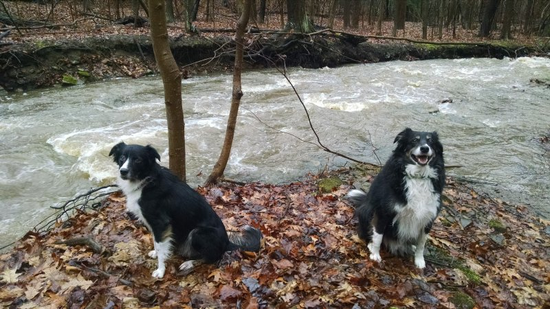
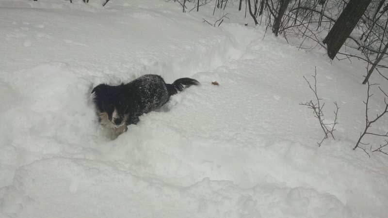
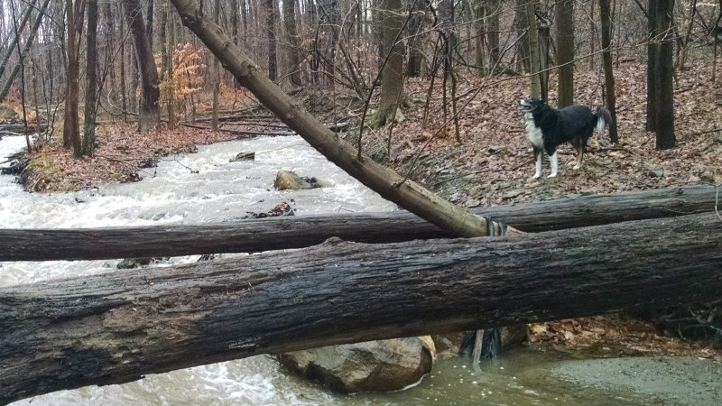
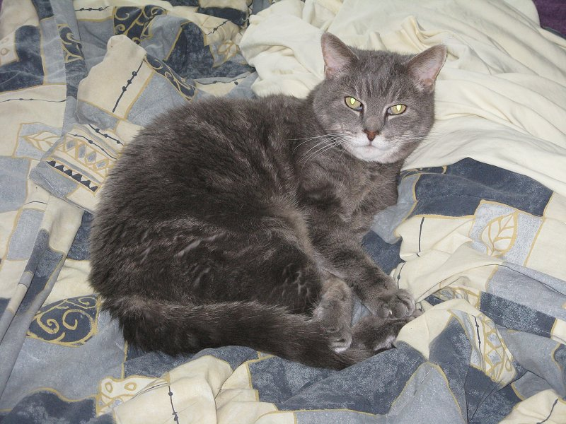
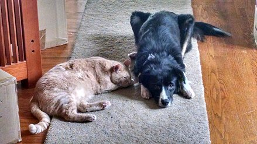
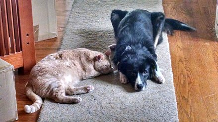
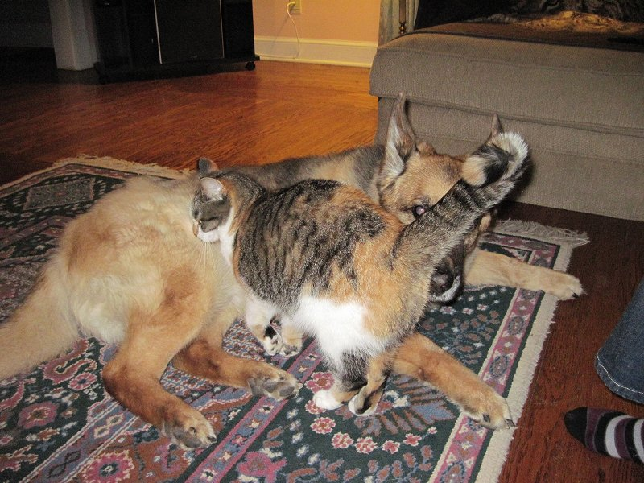

Pets
Starbuck and Savannah
Starbuck and Savannah were born on Christmas day in 2008. They are the offspring of parents that were an Autstralian Shephard and a Border Collie.
Starbuck (at 82 pounds on the right in the picture below) looks just like his Australian Shephard parent and Savannah (at 42 pounds on the left in the picture below) looks just like her Border Collie parent. Though those breeds do have a lot of similar colorings, they do have different body types and fur.
I adopted them when they were 3 years old. They were completely untrained and out of control to say the least. After years of hard work, they've come a long way. The only time they now need to be on a leash is during walks through the neighbohood.
  On to the Cats
Here's a brief glimpse at some of the many cats I have or had since 1992. Most, if not all, are rescued from various situations. A couple were inherted from a marriage. They are all so unique.
Onyx and Mr Shen
Mr Shen (right) has always been a snuggler... with any cat, dog or person that will allow it.
Lamby
Lamby with her favorite toys. She would carry the stuffed lamby around the house while making crying noises... as if it were her baby. Even though it was nearly her size, she managed to do it.
Beeber
Beeber was always the bully of the house, until one day he had an unknown accident and became disabled. Through weeks of my own physical therapy program, I was able to get him somewhat back to using his back legs, though he had to walk slowly and with a very noticeable limp.
Here he's enjoying some time in the garden.
Bebe
She might have been one of the smaller cats I've ever had, but Bebe sure had one of the biggest attitudes.
The Kitten and Mr Shen
The Kitten (left) was another rescued cat. She was undernourished as a kitten and never grew beyond, well, the size of a kitten. She's still fairly feral even today and will likely always be.
Big Buster
Last, but not least, is my favorite cat of all time, Big Buster. He was rescued as a month old kitten from an alley in the inner city. He went on to become the most loving animal I've ever encountered.
A few interspecies pics
 

Thunder and Pistol
Thunder was inherited via marriage. Pistol (another rescued cat), found dogs much more to her liking than cats... and Thunder was her favorite dog of all.
